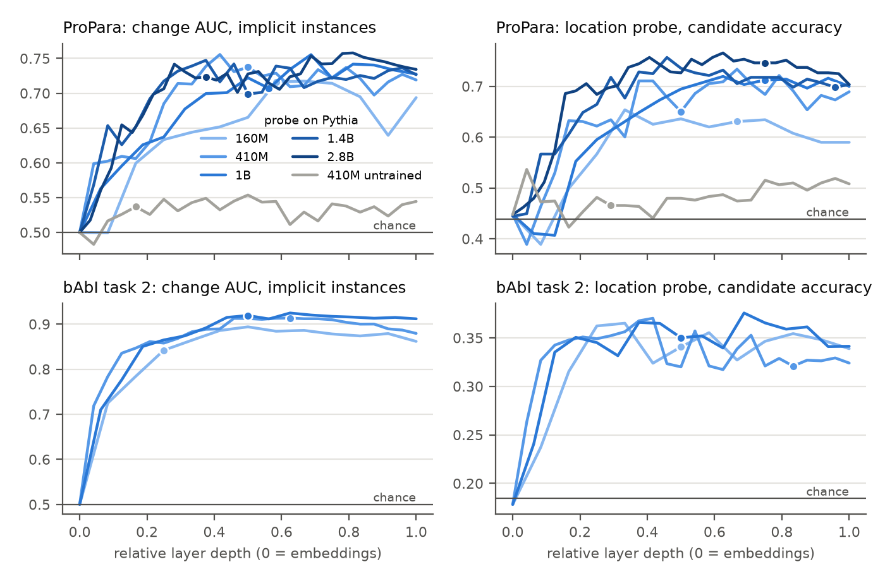
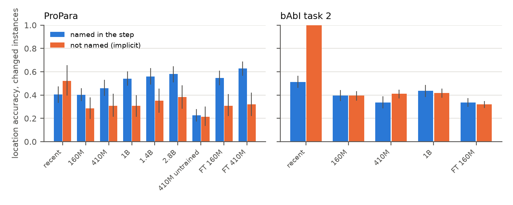
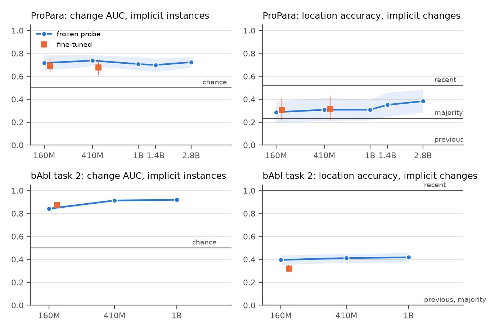

Implicit State Changes in Procedural Text: Probing vs Fine-tuning
Michail Pettas
Final project report, 5DV218 Språkteknologi, HT26
October 2026
Abstract. I test whether pretrained language models represent state changes that the text leaves implicit, by training linear probes on the frozen hidden states of five Pythia models (160M–2.8B) on ProPara and bAbI task 2 and comparing them with baselines, an untrained model, a control task and models fine-tuned at two sizes. State change and location are decodable well above the untrained model and the control task (for location clearly only from 1B up), but much less so when the entity is not named in the step: on ProPara the probes separate changed from unchanged entities with an AUC of 0.80–0.83 when the entity is named and 0.70–0.74 when it is not, and they almost never predict an implicit change outright. Location accuracy grows with model size; the signal for implicit changes does not. Fine-tuning the 160M and 410M models improves location accuracy by 5–8 points, mostly for named entities, but does not separate implicit changes better than the probe on the same model, and its advantage is smaller at 410M than at 160M. On this data, neither a larger model nor fine-tuning adds information about implicit changes. Reading all implicit changes in the ProPara test set showed that only about half are genuine inferences and a fifth are annotation errors.
Language models are now used to plan actions, in robotics and in assistants that follow instructions. Such a system has to know where things end up even when the text never says so: that the fuel is gone once it has burned, or that the tent is at the camp site after the car it was packed in drove there. If a model gets these implicit changes wrong, it plans from a wrong state. When a model answers such a question wrongly, the information may be missing from the model, or it may be present in its hidden states but not reach the answer. The two cases call for different fixes. In the second case a small classifier on the frozen model recovers the information cheaply; in the first, the model has to be trained further.
Recent work shows that language models from 410M parameters answer entity-tracking questions about naturalistic stories at human level (Drożdż and Heilbron, 2026), but direct prompting does not reveal internal representations. Earlier probing work recovered world states from models trained on board games (Li et al., 2023) or fine-tuned on the domain (Li, Nye and Andreas, 2021). I ask this question for pretrained models on implicit state changes, across a suite of models differing only in size.
RQ1: How accurately can an entity's state change and location be classified from the frozen hidden states of a pretrained model?
RQ2: How far does accuracy drop when the entity is not mentioned in the sentence that changes its state, compared with the baselines?
RQ3: How does this depend on model size, and how large is the gap between a frozen probe and a fine-tuned model?
Hypothesis. Pretrained models already represent implicit state changes, so probes on frozen hidden states will beat the baselines on implicit instances, and the gap to the fine-tuned model will shrink as models get larger. If the probes stay at baseline on implicit instances while the fine-tuned model is clearly better, the hypothesis is rejected.
In short, the hypothesis holds only in part. The information is there, above chance and above an untrained model, but it is weaker for implicit than for explicit changes, does not grow with size, and in accuracy on implicit instances it does not clearly beat the simple baselines. Fine-tuning does not add it either; its advantage over the probe is smaller at 410M than at 160M, as the hypothesis predicts, but mostly within the noise.
Tracking state in procedural text. Dalvi et al. (2018) introduced ProPara, paragraphs about scientific processes in which every participant's location is annotated after every step, and framed the task as filling this grid. Their two neural models, one predicting each sentence's changes locally and one modelling the paragraph globally, reached 34–45% on the paper's evaluation, against about 80% for humans. Tandon et al. (2018) added commonsense constraints and a structured search over the whole grid (ProStruct), which removed implausible predictions such as an entity moving after it was destroyed. Later systems built on pretrained transformers; Rajaby Faghihi and Kordjamshidi (2021), for example, marked each token as past, current or future relative to the step being asked about and fine-tuned a transformer on ProPara. In all of these the model is trained for the task, so they do not tell whether the pretrained representations already contain the state.
Probing for world state. Li, Nye and Andreas (2021) trained probes on the encoder states of BART and T5 fine-tuned on two domains (Alchemy and TextWorld) and recovered each entity's state from the representation of its mention well above baselines; editing that representation changed the model's later predictions, so the state was also used. Li et al. (2023) trained a GPT model only on Othello move sequences and recovered the board state from its activations, with non-linear probes clearly better than linear ones, and again changed the model's moves by editing the state. Toshniwal et al. (2022) showed that language models trained on chess notation learn to track the board well enough to predict legal moves. These studies show that sequence models can build world representations, but in synthetic domains or after domain training.
Entity tracking in pretrained language models. Kim and Schuster (2023) tested in-context entity tracking with descriptions of boxes and their contents and found non-trivial tracking only in models with large amounts of code in pretraining, while a smaller T5 model could learn the task through fine-tuning. Prakash et al. (2024) traced the circuit that performs entity tracking in LLaMA-7B and found that fine-tuned variants of the model use the same circuit, only more effectively: fine-tuning enhanced an existing mechanism instead of building a new one. Drożdż and Heilbron (2026) compared models with 48 human readers on naturalistic narratives and found human-level tracking already at 410M parameters, improving with size.
Probing methodology. A probe that is too expressive can learn the task itself. Hewitt and Liang (2019) proposed control tasks, in which each word type gets a random label, and measured a probe's selectivity, its accuracy on the real task minus that on the control; they recommend simple, regularised probes. Belinkov (2022) reviews further pitfalls: probe accuracy shows that information is decodable, not that the model uses it, and needs to be compared with baselines such as probes on an untrained model of the same architecture. Marks and Tegmark (2024) found that the truth of simple statements is linearly decodable from the hidden state at the end of the statement, which motivates the way I probe for location below.
Framing. Following ProPara, I frame the task as classification of one entity at one step: its state change (CREATE, MOVE, DESTROY, NONE) and its location after the step. What is new is the comparison of the same classification done two ways, by a linear probe on a frozen model and by fine-tuning, across models of different size trained on identical data, evaluated separately on instances where the entity is named in the step and on those where it is not.
ProPara (Dalvi et al., 2018) has 488 crowd-written paragraphs about scientific processes (photosynthesis, erosion, digestion, …), 6.8 sentences long on average, with the participants of each process and a grid of their locations before the first and after every sentence. A location is a span such as soil or deep in the earth, '−' (does not exist) or '?' (exists, location unknown). I use the official split (391/43/54 paragraphs), which is by process, so test paragraphs describe processes not seen in training. bAbI task 2 (Weston et al., 2016) has machine-generated stories in which people move between six places and pick up and drop objects (Mary got the milk there. Mary went to the hallway.); an object's location changes when the person carrying it moves. bAbI only annotates the answers to its questions, so I simulated every story (who is where, who holds what) to get each object's location after each sentence; the simulation agrees with all 2,000 answers in the 1k training and test files. I use the 1k version, with the last 20 of its 200 training stories as development set.
| split | documents | instances | implicit | changes | implicit changes | candidates | |
|---|---|---|---|---|---|---|---|
| ProPara | train | 391 | 10,356 | 6,862 | 2,460 | 543 | 3.0 |
| dev | 43 | 1,204 | 763 | 310 | 71 | 3.3 | |
| test | 54 | 1,674 | 1,111 | 401 | 94 | 3.2 | |
| bAbI task 2 | train | 180 | 9,578 | 8,174 | 893 | 555 | 5.4 |
| dev | 20 | 1,064 | 906 | 92 | 58 | 5.4 | |
| test | 200 | 11,132 | 9,607 | 1,057 | 683 | 5.4 |
Table 1. Instances per split. Implicit: the entity is not named in the step; changes: its state changes in the step; candidates: candidate locations per document.
Instances. One instance is one entity after one step. Its state change is derived from the locations before and after the step as in ProPara: CREATE ('−' to anything else), DESTROY (anything to '−'), MOVE (one location to a different one, including '?' to a known place) and NONE otherwise. Its location label is the location after the step, chosen among the candidate locations of the document plus '−' and '?'. For ProPara the candidates are all locations annotated in the paragraph; for bAbI they are all places named in the story. An instance is explicit if the entity is named in the sentence of that step (any of its names in ProPara, which lists alternatives such as water; droplets, matched on the head noun with singular and plural forms) and implicit otherwise. The comparison that RQ2 asks about is between explicit and implicit instances whose state changes in that step: in ProPara 307 and 94 test instances.
Reading the implicit changes. I take the annotations as correct but checked them: I read all 94 implicit changes in the ProPara test split and sorted them into three groups (results/implicit_test_verdicts.csv). In 43 the entity is not referred to and the change follows from the step by inference: Animals eat the plants moves the nitrogen in the plants into the animals; The skeleton dissolves creates a mold. In 31 the entity is referred to by another expression: a pronoun (It grows into a small seedling), a subject left out (Drops to the ground) or another word (the signals are called information). In 20 the change does not follow from the step: it is annotated one step too early or too late, it is not supported by the text, or only the spelling of the location changes (steamy, swampy area to swampy area). So about half of the "implicit" changes are implicit in the sense the study is about, and a fifth are annotation noise. I report the three groups separately. The verdicts were written before any model was run, so they could not be influenced by the predictions.
Data statement (short form, after Bender and Friedman, 2018).
ProPara. Curation rationale: paragraphs collected to test comprehension of processes, with grids made for the purpose. Language: English, written; the variety is not documented. Speakers: crowdworkers asked to describe a process given a prompt; no demographic information is reported. Annotators: the grids were made by expert annotators and checked by a second one, and the locations were filled in by five crowdworkers with 0.67 average pairwise agreement; no demographics are reported. Speech situation: short explanatory texts written for the dataset (published 2018), for an unspecified reader, at roughly school-science level. Text characteristics: 6–10 short sentences, often without a subject, with typos and errors (Embryo is C.); as Section 3.1 shows, about a fifth of the implicit changes are annotated at the wrong step or without support.
bAbI task 2. Curation rationale: a synthetic test of reasoning from two facts. Language: English generated from a small grammar (6 places, 4 people, 3 objects, 5 movement verbs); no speakers or annotators; the labels are exact by construction. Text characteristics: 5-word sentences in stories of about 22 sentences; nothing about it resembles natural text, which is why it is only the controlled companion to ProPara.
Both were public on the web before 2020 and may be part of the Pile, Pythia's training data (Gao et al., 2020); I could not check this.
I use the Pythia suite (Biderman et al., 2023) at 160M, 410M, 1B, 1.4B and 2.8B parameters on ProPara and at 160M, 410M and 1B on bAbI, whose longer stories make the larger models slow on the 8 GB GPU I used. All were trained on the same data in the same order, so size is the only difference. For instance (entity, step t) the model reads the document up to and including sentence t, preceded by Pythia's end-of-text token, and then one of two kinds of continuation, for example for the entity seed after step 2 of a paragraph about seed dispersal:
I take the hidden state of the last token of each continuation at every layer (the embedding output and every transformer block). Query states feed the state-change and existence probes; statement states feed the location probe. Each entity also gets a query after an empty text, its state before step 1. The prefix is run once and its key/value cache shared by all continuations of the step, which gives the same states as separate runs (up to float32 rounding, checked for each model). All models compute in float32: running Pythia-160M in float16 or bfloat16 changed the middle-layer states by 5–30% (relative norm), which would add noise to the probes and differ between sizes. To fit 2.8B in the GPU's 8 GB, weights are stored in float16, as Pythia distributes them, and cast to float32 layer by layer, which is exact.
All probes are logistic regression with an L2 penalty, on features standardised with training statistics (Pythia has a few dimensions with very large values that would otherwise dominate the penalty; Sun et al., 2024). They are fitted with L-BFGS on the full training set. The penalty (10−4 to 10−1) and the layer are chosen on the development split, separately for each probe.
The location prediction is '−' or '?' if the existence probe says so and otherwise the highest-scoring candidate, so it is right only if both parts are right. I use two controls. The control task (Hewitt and Liang, 2019) replaces the labels with ones that depend only on names: every entity name gets a random change label, drawn from the training distribution, and every location name a random rank, and the control's location is the candidate with the highest rank. A probe can learn these only by memorising names it saw in training, as a probe that learns the task itself would. Selectivity is the real task's score minus the control's (ProPara only, as bAbI has three object names and six places, which makes any name-based control trivial). The untrained model is Pythia-410M at step 0 of training, the same network before it saw any text: a probe on it can only use what the input tokens give a linear classifier.
The fine-tuned models read the same inputs and have the same three linear heads on the last-token state of the final layer; the difference to the probe is that every weight is trained. The loss is the sum of the three cross-entropies. I fine-tune Pythia-160M and 410M on ProPara, so that probe and fine-tuning can be compared at two sizes and the hypothesis that the gap between them shrinks with size can be tested directly, and 160M on bAbI. Training uses AdamW (Loshchilov and Hutter, 2019) with 8-bit optimiser states (Dettmers et al., 2022) to fit in memory, learning rate 2·10−5 for the model and 10−3 for the heads, 6% warm-up and linear decay, 8 (document, step) groups per update and gradient clipping at 1. I train 5 epochs on ProPara and 3 on bAbI, whose epochs take twice as long, and keep the epoch with the best development score, the mean of change macro-F1 and location accuracy. Every model is fine-tuned with two seeds; the tables average their predictions and Table 6 gives each run.
There are three baselines: majority, the most frequent training label (NONE for change; for location the most frequent training label possible for the instance, which on ProPara is '−'); previous, the entity stays where it was, using the gold location before the step (so it is right on every unchanged instance and wrong on every change); and recent, the candidate location mentioned last in the text so far, '?' if there is none (location only). The previous-location baseline is given the gold state before the step, which no probe or fine-tuned model has, so it is a reference point for how far stability alone goes rather than a competitor: a system that has to track the state from the text can only match it by being right about every step before. I report accuracy for location and accuracy and macro-F1 for state change, on the test split, for all instances and for the subsets. Location has no fixed set of classes (candidates differ per paragraph), so macro-F1 is only reported for change. These metrics depend on the decision threshold, and that matters for implicit instances: only 8% of the implicit training instances change, so a well-calibrated classifier will rarely predict a change for one even when its features carry information about it. I therefore also report the change AUC: the ROC-AUC of the predicted probability of a change (1 − P(NONE)) against whether the state changed, computed within a subset. It is the probability that a changed instance gets a higher score than an unchanged one; 0.5 means no information, and the baselines, which give every instance the same score, are at 0.5 by construction.
In bAbI an object only changes location when the person carrying it moves, and that sentence names the new place, so the most-recent-location baseline is right on every implicit change by construction. The harder part is knowing which objects move. I therefore also evaluate on the steps where someone moves and an object that is not named already has a known location: the object moves if the mover carries it and stays otherwise. The previous-location baseline is right on every object that stays and the recent-location baseline on every object that moves, and each is wrong on nearly all of the other group, so only a system that tracks who carries what can be right on both. Instances of one document are not independent, so 95% confidence intervals come from a bootstrap over documents (1,000 resamples; Efron and Tibshirani, 1993); all systems and subsets are scored on the same resamples, which makes differences between them paired. Code, predictions and logs are in the submitted project folder.
Table 2 gives the test results. On ProPara the probes classify the state change with a macro-F1 of 58–64, against 22 for the majority baseline, and their change probability separates changed from unchanged instances with an AUC of 0.86–0.87. The same probes on the untrained network reach 29.5 and 0.59, so the information comes from pretraining and not from the probe. Location accuracy rises with size from 50.7 (160M) to 62.5 (2.8B) but stays below the previous-location baseline (76.0), which is given the gold location before the step and is therefore right whenever nothing changes, as is the case for three quarters of the instances. The limiting part is the existence probe (does not exist / unknown / known place), whose macro-F1 stays between 48 and 58; the candidate part alone picks the right place for 63% (160M) to 75% (2.8B) of the instances with a known location, against 44% for a random candidate (Figure 1, right). On bAbI the change signal is stronger (AUC 0.89–0.94) but locations are hard: the probes pick the right room for only 32–35% of the objects, against 18% by chance, so their location accuracy (55–57) is far below that of keeping the previous location (90.5).
| ProPara | bAbI task 2 | |||||
|---|---|---|---|---|---|---|
| location acc. | change F1 | change AUC | location acc. | change F1 | change AUC | |
| Majority | 52.6 47–58 | 21.6 21–22 | – | 45.5 43–48 | 47.5 47–48 | – |
| Previous location (gold) | 76.0 73–79 | 21.6 21–22 | – | 90.5 90–91 | 47.5 47–48 | – |
| Most recent location | 22.6 18–28 | – | – | 21.2 19–23 | – | – |
| Probe 160M | 50.7 46–55 | 58.0 53–63 | 86.3 83–89 | 55.8 54–58 | 71.5 70–73 | 88.6 87–90 |
| Probe 410M | 58.7 54–63 | 62.7 58–67 | 86.9 84–90 | 54.8 52–58 | 76.5 75–78 | 93.7 93–94 |
| Probe 1B | 61.1 57–65 | 61.7 57–66 | 86.0 83–89 | 57.1 55–59 | 77.3 76–79 | 93.9 93–95 |
| Probe 1.4B | 61.8 57–66 | 60.9 56–65 | 85.6 82–89 | – | – | – |
| Probe 2.8B | 62.5 58–67 | 64.4 59–69 | 86.8 84–89 | – | – | – |
| Probe, 410M untrained | 31.5 26–38 | 29.5 27–32 | 59.0 55–63 | – | – | – |
| Fine-tuned 160M | 58.5 54–63 | 60.1 55–66 | 83.9 81–87 | 57.9 56–60 | 73.1 72–75 | 91.3 90–92 |
| Fine-tuned 410M | 63.9 60–68 | 62.7 58–67 | 84.8 81–88 | – | – | – |
Table 2. Test results on all instances, with 95% bootstrap intervals in small print. Location accuracy, state-change macro-F1 and change AUC (0.5 = no information; not defined for the baselines, which give every instance the same score). Probes use the layer that is best on the development split.
Figure 1 shows where the information is. The change signal for implicit instances appears in the first third of the network and stays flat after that; the location probe keeps improving into the upper half of the larger models. On the untrained network both stay within 0.1 of chance at every layer. The control task (Table 3) separates the two parts. For state change, every probe on a trained model beats its name-only control by 12–16 points of macro-F1, against 1 point on the untrained network. For location the control is a stronger competitor: a probe that has only learned which place names tend to be the answer picks the right candidate for 46–58% of the instances, against 44% at random. The location probes on 160M and 410M beat it by only 7 points, those on 1B to 2.8B by 16–28. On the untrained network the location probe does worse on the real task than on the control (−13 points): the place names are visible to it, the entity's state is not.

Figure 1. Test score per layer, plotted against relative depth. Left: change AUC on implicit instances. Right: accuracy of the location probe at picking the right candidate, on instances with a known location. Dots mark the layer chosen on the development split. Grey: the untrained 410M network.
| state change (macro-F1) | location candidate (accuracy) | |||||||
|---|---|---|---|---|---|---|---|---|
| layer | task | control | selectivity | layer | task | control | selectivity | |
| Probe 160M | 7/12 | 58.0 | 46.3 | +11.7 | 8/12 | 63.1 | 56.1 | +6.9 |
| Probe 410M | 12/24 | 62.7 | 49.2 | +13.5 | 12/24 | 65.0 | 58.3 | +6.7 |
| Probe 1B | 9/16 | 61.7 | 48.4 | +13.4 | 12/16 | 71.2 | 51.9 | +19.4 |
| Probe 1.4B | 12/24 | 60.9 | 44.9 | +16.0 | 23/24 | 69.8 | 53.6 | +16.2 |
| Probe 2.8B | 12/32 | 64.4 | 50.2 | +14.2 | 24/32 | 74.6 | 46.4 | +28.2 |
| Probe, 410M untrained | 4/24 | 29.5 | 28.5 | +1.0 | 7/24 | 46.5 | 59.5 | -13.0 |
Table 3. ProPara, control task (Hewitt and Liang, 2019) at the layer chosen for the real task: test score of the task probe and of the same probe trained on name-only random labels, and their difference (selectivity).
On ProPara every trained probe does clearly worse when the entity is not named in the step that changes it (Table 4, Figure 2). Location accuracy on changed instances drops by 11–23 points, with a steeper decline in the larger models (2.8B: 58.0 down to 38.3, a difference of 19.7, interval 6.9–32.8) because their gains come from explicit changes. Change AUC falls from 0.80–0.83 on explicit to 0.70–0.74 on implicit instances, an edge of 7.6–11.7 points whose interval excludes zero across all models. As predicted labels, implicit changes are almost never detected: the probes call 2–10% of them a change, against 50–62% of explicit changes. The most-recent-location heuristic does the opposite: it is better on implicit changes (52.1) than on explicit ones (40.4), since a step moving an entity without naming it usually names the destination.
| location accuracy, changed instances | change AUC | |||||
|---|---|---|---|---|---|---|
| explicit (307) | implicit (94) | genuine (43) | explicit (563) | implicit (1111) | genuine (1060) | |
| Majority | 32.2 27–37 | 23.4 12–36 | 18.6 6–33 | – | – | – |
| Previous location (gold) | 0.0 0–0 | 0.0 0–0 | 0.0 0–0 | – | – | – |
| Most recent location | 40.4 33–47 | 52.1 40–66 | 62.8 45–79 | – | – | – |
| Probe 160M | 40.1 35–46 | 28.7 20–38 | 30.2 17–44 | 80.1 75–85 | 71.6 65–78 | 67.6 57–78 |
| Probe 410M | 45.9 39–53 | 30.9 21–41 | 27.9 15–43 | 81.3 76–86 | 73.7 69–79 | 73.3 65–81 |
| Probe 1B | 54.1 48–60 | 30.9 22–40 | 32.6 20–45 | 80.2 75–85 | 70.7 65–77 | 72.3 64–80 |
| Probe 1.4B | 56.0 49–63 | 35.1 25–46 | 30.2 17–45 | 81.6 76–86 | 69.9 64–76 | 64.4 56–73 |
| Probe 2.8B | 58.0 51–65 | 38.3 28–48 | 39.5 26–55 | 82.9 78–87 | 72.3 68–77 | 73.3 66–79 |
| Probe, 410M untrained | 22.5 17–28 | 21.3 14–30 | 14.0 4–26 | 59.8 54–66 | 53.7 46–61 | 51.4 43–61 |
| Fine-tuned 160M | 54.7 48–61 | 30.9 22–41 | 33.7 21–49 | 78.9 73–84 | 69.6 64–75 | 68.9 61–76 |
| Fine-tuned 410M | 62.7 57–69 | 31.9 22–42 | 36.0 22–49 | 81.3 76–86 | 67.9 61–75 | 65.4 55–74 |
Table 4. ProPara test. Left: location accuracy on instances whose state changes, by whether the entity is named in the step, and on the 43 implicit changes that I judged genuine inferences. Right: change AUC within explicit and within implicit instances, and within the genuine changes together with all unchanged implicit instances. Number of instances in brackets.
Against the baselines, the picture depends on the measure. In change macro-F1 on implicit instances the probes beat the majority class by 5–9 points from 410M up (intervals exclude zero; at 160M the interval includes zero). In location accuracy on implicit instances they do not: the majority location is '−', which is right for 62% of the implicit test instances because most entities that a step does not name do not exist yet or any more, and the probes reach 57–67, a difference of −5 to +4 points whose interval includes zero for every model. On implicit changes they beat the majority class clearly only at 1.4B and 2.8B (+12 and +15 points), and the previous location, which is wrong there by definition. They do not beat the most-recent-location heuristic on implicit changes (38.3 against 52.1 at 2.8B, interval of the difference −33 to +4), but that heuristic is wrong on 87% of the implicit instances that do not change, and over all implicit instances it reaches 16.5 against the probes' 57–67. The noise in the annotation matters here. On the 43 genuine implicit changes the AUC is 0.64–0.73 and the location accuracy 28–40%; on the 31 changes where the entity is referred to by a pronoun or another word, the probes do better (AUC 0.76–0.82), and on the 20 doubtful ones worse (0.56–0.68), which is what one would expect if many of those labels are wrong.

Figure 2. Location accuracy on instances whose state changes, by whether the entity is named in the step. The previous-location baseline is 0 on all of them by definition and is left out. On bAbI the most-recent-location baseline is right on every implicit change by construction (Section 3.5).
On bAbI the explicit/implicit contrast looks different because the tasks differ: an explicit change in bAbI is an object being picked up, an implicit one its carrier moving. Location accuracy is about the same for both (Table 5), and the change AUC is high on implicit instances (0.84–0.92). The harder test is binding (Table 5, right): when someone moves, does the probe move only the objects that person carries? Here the 160M probe is weak (AUC 0.64) and the 410M and 1B probes clearly better (0.79 and 0.80), but location accuracy on these steps stays at 26–30%, no better than the most-recent-location heuristic and far below keeping the previous location (84%), because the probes rarely pick the right room in the first place.
| location acc., changed | location acc., someone else moves | |||||
|---|---|---|---|---|---|---|
| explicit (374) | implicit (683) | carried (566) | not carried (2905) | both (3471) | change AUC | |
| Majority | 1.9 1–3 | 0.0 0–0 | 0.0 0–0 | 0.0 0–0 | 0.0 0–0 | – |
| Previous location (gold) | 0.0 0–0 | 0.0 0–0 | 0.0 0–0 | 100.0 100–100 | 83.7 82–85 | – |
| Most recent location | 51.3 46–56 | 100.0 100–100 | 100.0 100–100 | 15.9 15–17 | 29.6 28–32 | – |
| Probe 160M | 39.6 35–44 | 39.5 35–44 | 41.5 37–46 | 27.0 24–30 | 29.4 27–32 | 64.4 62–67 |
| Probe 410M | 33.7 29–39 | 41.1 37–45 | 42.6 38–47 | 23.1 21–26 | 26.2 24–29 | 79.0 77–81 |
| Probe 1B | 43.6 38–49 | 41.7 38–46 | 45.1 40–49 | 26.8 24–30 | 29.8 27–33 | 80.1 78–82 |
| Fine-tuned 160M | 33.7 30–38 | 32.0 29–35 | 34.5 31–38 | 26.5 24–29 | 27.8 25–30 | 71.3 69–74 |
Table 5. bAbI test. Left: location accuracy on instances whose state changes. Middle: steps in which someone moves while an object that is not named has a known location; the object moves if the mover carries it and stays otherwise. Right: change AUC on those steps.
Figure 3 puts the two measures of implicit state against model size. On ProPara, the change AUC on implicit instances is flat from 160M to 2.8B (0.72, 0.74, 0.71, 0.70, 0.72), while location accuracy on implicit changes rises slowly from 28.7 to 38.3 with overlapping intervals. On bAbI the change AUC rises from 160M (0.84) to 410M (0.91) and then levels off, and location accuracy stays at about 40%.
Fine-tuning the whole model on the same inputs (Table 6; the two seeds differ by at most 1.6 points in overall location accuracy and by up to 6 points on implicit changes) improves location accuracy over all ProPara instances by 7.8 points at 160M (interval 3.3–12.4) and 5.3 at 410M (2.2–8.8), mostly on explicit changes (160M: 40.1 to 54.7; 410M: 45.9 to 62.7). On implicit instances it does not separate changed from unchanged entities better than the probe on the same model: the change AUC within implicit instances is 2.0 points lower at 160M (−6.9 to +3.2) and 5.9 points lower at 410M (−11.5 to −0.7). Fine-tuning mainly shifts the decision threshold: the fine-tuned 160M model predicts a change for 11% of the implicit changes, compared to only 2% for the probe, raising its change macro-F1 on implicit instances by 6.7 points (1.9–11.7) without adding discriminative signal. Location accuracy on implicit changes is within 2 points of the probe at both sizes, with intervals of about ±10. Every probe on a trained model has a higher change AUC than both fine-tuned models (85.6–86.9 against 83.9 and 84.8, Table 2) and the probes from 410M up a similar change F1 (60.9–64.4 against 60.1 and 62.7), while the fine-tuned 410M model has the best location accuracy of all systems that are not given the gold state (63.9).
Comparing the two sizes tests the second half of the hypothesis directly. Fine-tuning's advantage over the probe is smaller at 410M than at 160M on every measure of implicit state: by 2.3 points for location accuracy on implicit instances (−7.7 to +2.8), 3.8 for change AUC (−10.6 to +2.6) and 4.6 for change macro-F1 (−9.6 to −0.2); only the last interval excludes zero. On bAbI, where only 160M was fine-tuned, fine-tuning is 2 to 3 points better than the probe on overall location accuracy and change AUC, also within implicit instances (AUC +3.4, 1.9–4.8), but worse on location for implicit changes (−7.5, −11.6 to −3.6).

Figure 3. Implicit instances against model size: change AUC within implicit instances (left) and location accuracy on implicit changes (right), with 95% intervals (band) for the probes and the fine-tuned models (squares, drawn slightly to the right). Horizontal lines: baselines and chance.
| model | seed | epoch kept | dev score | test location acc. | location acc., implicit changes | |
|---|---|---|---|---|---|---|
| ProPara | 160M | 0 | 5 of 5 | 60.4 | 58.3 | 31.9 |
| 1 | 5 of 5 | 62.1 | 58.7 | 29.8 | ||
| 410M | 0 | 5 of 5 | 65.9 | 64.1 | 30.9 | |
| 1 | 5 of 5 | 65.1 | 63.8 | 33.0 | ||
| bAbI task 2 | 160M | 0 | 3 of 3 | 64.4 | 58.7 | 35.0 |
| 1 | 3 of 3 | 64.5 | 57.1 | 29.0 |
Table 6. Each fine-tuning run: the epoch kept (best on the development split), its development score (mean of change macro-F1 and location accuracy), and its test location accuracy on all instances and on implicit changes. The other tables average the predictions of the two seeds.
Is the information there? Yes, partly. A linear read-out of the frozen states recovers the state change and location far better than the same read-out on an untrained network, and better than a control task that can only memorise names, so the results are not an artefact of the probe. The exception is location in the two smallest models, where the probe beats the control by only 7 points, so much of what it does there could come from the place names alone. For implicit changes the answer is weaker. The change AUC of about 0.72 on ProPara means that a changed entity gets a higher change probability than an unchanged one in about seven cases out of ten, compared with eight out of ten when the entity is named and five out of ten by chance. That is enough to rank cases but not to decide them: implicit changes are rare (8% of implicit training instances), and at that base rate the probes almost never put a change above NONE. Accuracy alone would have said the information is absent; the AUC says it is present but weak.
Was the hypothesis right? Only in part. The probes carry information about implicit changes (AUC 0.70–0.74), beat the majority class in change macro-F1 on implicit instances from 410M up, and beat it in location accuracy on implicit changes at 1.4B and 2.8B. But in location accuracy over all implicit instances they are no better than always answering that the entity does not exist, and on implicit changes the most-recent-location heuristic is better, although it fails on almost everything else. The previous-location baseline, which no system reaches, is not a fair competitor: it is given the gold state before the step, which is exactly what the probes have to track. The second part of the hypothesis, that the gap to fine-tuning shrinks with size, holds in direction: fine-tuning's advantage on implicit instances is smaller at 410M than at 160M on every measure, though clearly so only for change macro-F1, and two sizes make this a weak test. The gap was also never in fine-tuning's favour where the study looks: on implicit instances fine-tuning moved the decision threshold but did not rank changes better than the frozen probe. By the rejection criterion of the hypothesis (probes at baseline on implicit instances while the fine-tuned model is clearly better), the hypothesis is not rejected; but the expectation that larger models represent implicit changes better is not supported on ProPara.
Why would implicit changes not improve with size? The larger models improve on what the text says (explicit changes, and picking the place among candidates), while the implicit signal stays at the same level from 160M to 2.8B. One reading is that this signal comes from cues that even the smallest model picks up, such as a step naming a new place or a verb of transformation, rather than from tracking the entity through the process. The manual reading supports this: the probes do best on implicit changes where the entity is still referred to by a pronoun or another word, worst on the doubtful ones, and in between on genuine inferences, which are the cases the study is about. bAbI points in the same direction for binding: the probes know that a move happened but only the 410M and 1B models separate the carried objects from the others well, and none of them can tell which room it is. This agrees with Prakash et al. (2024) in that fine-tuning, at either size, sharpened what the model already did (locating entities the text names) rather than adding a new ability, and with Kim and Schuster (2023) in that tracking which entity is where is hard for models of this size.
Pretrained Pythia models represent entity states and locations well enough for linear probes to recover them, a signal originating in pretraining. But when a step omits the entity, that signal weakens substantially: it does not scale from 160M to 2.8B parameters, and its raw accuracy barely beats simple baselines. Fine-tuning at 160M and 410M improved location for named entities, yet added no real information about implicit changes. For systems that plan from text, a cheap probe on a frozen model suffices for explicit states, but implicit states require more than scaling within this parameter regime. For evaluation, ProPara's implicit changes warrant caution: only about half in the test set reflect genuine physical inferences, while a fifth stem from annotation noise.
Sources of error and what I would do differently. The ProPara test set has only 94 implicit changes (43 genuine), so many intervals are wide. The explicit/implicit split is a string match on head nouns, which misses pronouns and synonyms; my manual reading corrects this for the test set only, and was done by one person. Fine-tuning covers two sizes with two seeds each; the 410M model was still improving slightly on the development set at its fifth and last epoch, so its numbers may be a slight underestimate, and two sizes make the size trend of the gap a weak test. On bAbI I only probed up to 1B and fine-tuned only 160M. The probes are linear and read one token's state with one fixed template; Li et al. (2023) needed non-linear probes for Othello, so a linear probe gives a lower bound. Finally, ProPara and bAbI may be in the Pile, which would flatter all results equally.
Future work. The motivation asked whether information is missing from the model or only from its answers; I measured the first but not the second, and the obvious next step is to ask the same models directly (prompting) and compare their answers with the probes. Causal interventions on the probed directions (Li et al., 2023) would show whether the models use the information. The location probe could score '−' and '?' as statements of their own (The seed does not exist.) in one softmax with the candidates, instead of relying on the separate existence probe that limits it now. A cleaned set of implicit changes across all splits, or OpenPI (Tandon et al., 2020), whose open vocabulary of states would also test changes other than location, would make the implicit comparison more reliable.
Belinkov, Y. (2022). Probing classifiers: Promises, shortcomings, and advances. Computational Linguistics, 48(1), 207-219.
Bender, E. M. and Friedman, B. (2018). Data statements for natural language processing: Toward mitigating system bias and enabling better science. Transactions of the Association for Computational Linguistics, 6, 587-604.
Biderman, S. et al. (2023). Pythia: A suite for analyzing large language models across training and scaling. In Proceedings of ICML 2023.
Dalvi, B., Huang, L., Tandon, N., Yih, W. and Clark, P. (2018). Tracking state changes in procedural text: A challenge dataset and models for process paragraph comprehension. In Proceedings of NAACL-HLT 2018.
Dettmers, T., Lewis, M., Shleifer, S. and Zettlemoyer, L. (2022). 8-bit optimizers via block-wise quantization. In Proceedings of ICLR 2022.
Drożdż, K. and Heilbron, M. (2026). Entity tracking emerges in sub-billion parameter language models and exceeds human performance in naturalistic narratives. arXiv:2608.18083.
Efron, B. and Tibshirani, R. J. (1993). An Introduction to the Bootstrap. Chapman and Hall.
Gao, L. et al. (2020). The Pile: An 800GB dataset of diverse text for language modeling. arXiv:2101.00027.
Hewitt, J. and Liang, P. (2019). Designing and interpreting probes with control tasks. In Proceedings of EMNLP-IJCNLP 2019.
Kim, N. and Schuster, S. (2023). Entity tracking in language models. In Proceedings of ACL 2023.
Li, B. Z., Nye, M. and Andreas, J. (2021). Implicit representations of meaning in neural language models. In Proceedings of ACL-IJCNLP 2021.
Li, K., Hopkins, A. K., Bau, D., Viégas, F., Pfister, H. and Wattenberg, M. (2023). Emergent world representations: Exploring a sequence model trained on a synthetic task. In Proceedings of ICLR 2023.
Loshchilov, I. and Hutter, F. (2019). Decoupled weight decay regularization. In Proceedings of ICLR 2019.
Marks, S. and Tegmark, M. (2024). The geometry of truth: Emergent linear structure in large language model representations of true/false datasets. In Proceedings of COLM 2024.
Prakash, N., Rott Shaham, T., Haklay, T., Belinkov, Y. and Bau, D. (2024). Fine-tuning enhances existing mechanisms: A case study on entity tracking. In Proceedings of ICLR 2024.
Rajaby Faghihi, H. and Kordjamshidi, P. (2021). Time-stamped language model: Teaching language models to understand the flow of events. In Proceedings of NAACL-HLT 2021.
Sun, M., Chen, X., Kolter, J. Z. and Liu, Z. (2024). Massive activations in large language models. In Proceedings of COLM 2024.
Tandon, N., Dalvi, B., Grus, J., Yih, W., Bosselut, A. and Clark, P. (2018). Reasoning about actions and state changes by injecting commonsense knowledge. In Proceedings of EMNLP 2018.
Tandon, N. et al. (2020). A dataset for tracking entities in open domain procedural text. In Proceedings of EMNLP 2020.
Toshniwal, S., Wiseman, S., Livescu, K. and Gimpel, K. (2022). Chess as a testbed for language model state tracking. In Proceedings of AAAI 2022.
Weston, J., Bordes, A., Chopra, S., Rush, A. M., van Merriënboer, B., Joulin, A. and Mikolov, T. (2016). Towards AI-complete question answering: A set of prerequisite toy tasks. In Proceedings of ICLR 2016.